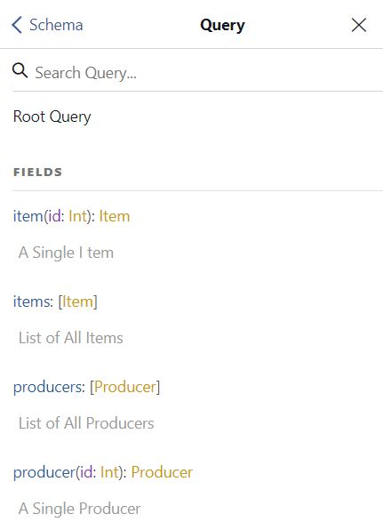
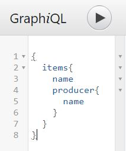
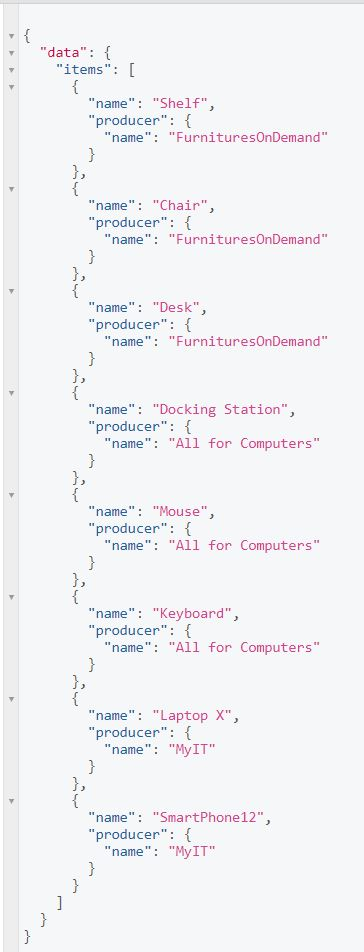

GraphQL instead of REST for API Design
Intro
GrapQL
- We can find GrapQL as an alternative for REST when developing API that boost web-app performance.
- However, there is still REST on the top and it has become the industry standard for deploying APIs.
- In short, by GrapQL you hit only one API's endpoint, you specify what you need with query, and you get only as much information as you need or as little information as you need instead of getting a complete dataset what we call over-fetching
- Because of it's specification, we can query some nested information as well.
| GraphQL | REST |
|---|---|
| Whole architecture for network-based software. | Specification providing structured query langauge. |
| Built on HTTP protocol. | Built on HTTP protocol. |
| Hits one endpoint for all API's resources. | Many endpoints for API's resources. |
| Defining in a query what data you need. | Hitting a specific endpoint dictates what data you get. |
| One API call gives you everything you need. | Many API calls to many endpoints to get what you need. |
| Fetchs only queried data. | Fetch complete dataset resource gives. |
Query structure:
- It organizes data into a graph where objets are represented by nodes.
- Like in every graph stucure, the relationships between nodes are represented by edges.
- Each node is being accessed by so-called resolver and due what is in there, resolver accesses appropriate API's resource.
- Technically, query is JSON like syntax but only with keys specified with no values of it.
Features
App includes following features:
Demo
GrapQL in NodeJS implementation:
- NodeJS has its own library that offers fully implementation of GrapQL.
- Every GrapQL API needs to start with so-called RootQuery:
const RootQueryType = new GraphQLObjectType({
name: 'Query',
description: 'Root Query',
fields: () => ({
items: {
type: new GraphQLList(ItemType),
description: 'List of All Items',
resolve: () => items
},
item :{
type: ItemType,
description: 'A Single Item',
args: {
id: { type: GraphQLInt }
},
resolve: (parent, args) => items.find(item => item.id === args.id)
}
})
}) - RootQuery references to ItemType query:
const ItemType = new GraphQLObjectType({
name:'Item',
description: 'This represents an item in company's inventory.',
fields: () => ({
id: { type: GraphQLNonNull(GraphQLInt) },
name: { type: GraphQLNonNull(GraphQLString) },
producerId: { type: GraphQLNonNull(GraphQLInt) },
producer: {
type: ProducerType,
resolve: (item) => {
return producers.find(producer => producer.id === item.producerId)
}
}
})
})
- Only last thing to define is a schema:
const schema = new GraphQLSchema({
query: RootQueryType,
}) - We define endpoint 'graphql' and we pass the schema when the endpoint called:
app.use('/graphql', graphqlHTTP({
schema: schema,
graphiql: true
}))
GraphiQL
- GraphQL offers interface to call '/graphql' endpoint with defined query.
- There is the dedicated section for writing queries.
- It has aslo the document explorer that shows a graph schemas:
 - Here is the way of writing query:
 - Here is the outcome:

Setup
Following installation required:
cd project_dirnpm initnpm install nodemonnpm install express express-graphql graphql